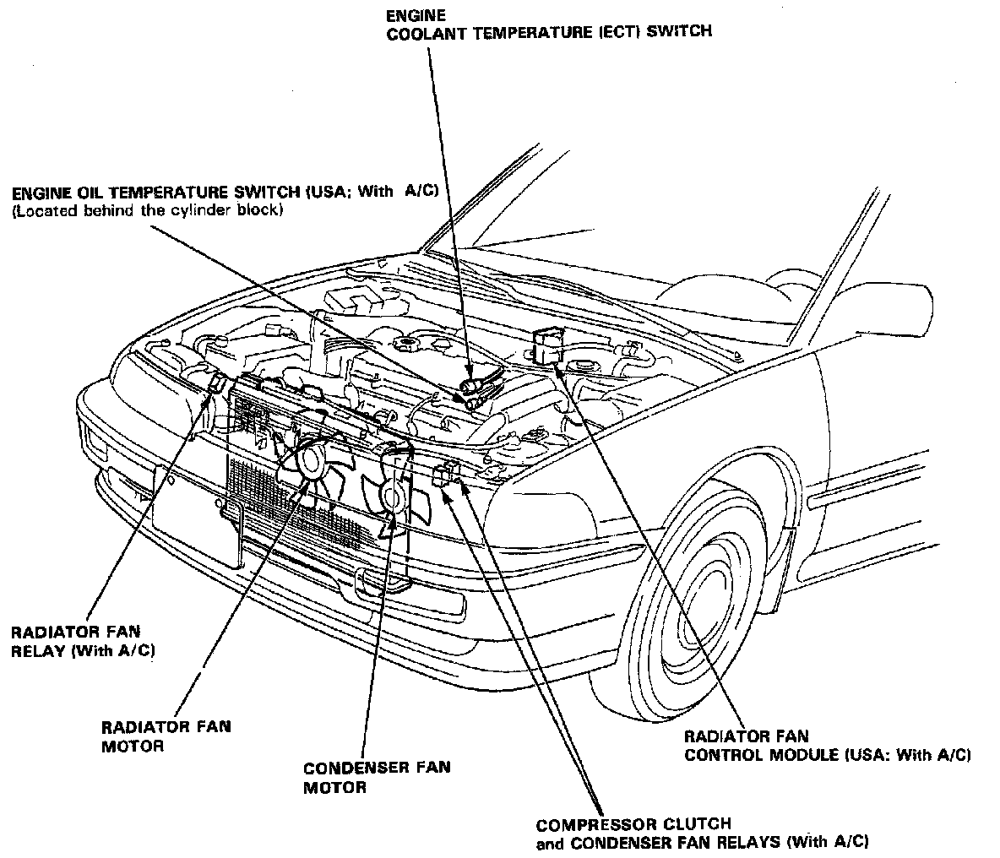

Operation CHARM
: Car repair manuals for everyone.
Home
>>
Acura
>>
1993
>>
Integra L4-1834cc 1.8L DOHC FI
>>
Repair and Diagnosis
>>
Sensors and Switches
>>
Sensors and Switches - Cooling System
>>
Engine - Coolant Temperature Sensor/Switch
>>
Radiator Cooling Fan Temperature Sensor / Switch
>>
Locations
Radiator Cooling Fan Temperature Sensor / Switch: Locations
